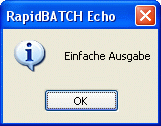

ECHO
ECHO
ECHO
ECHO
| Syntax: | ECHO Meldungstext |
| Beschreibung: | Zeigt ein einfaches Meldungsfenster mit OK-Button an.  |
| Beispiele: | echo 'Hello World' [a] = '5' + '4' echo 'Ergebnis ist: ' # [a] end |
| Bemerkungen: | Der Standard-Text für die Titelzeile von ECHO-Meldungsfenstern kann über die Variable [Echo_Title] geändert werden. Verwenden Sie die MSGBOX-Anweisung, um ein individuell gestaltetes Messagebox-Fenster bereitzustellen. |